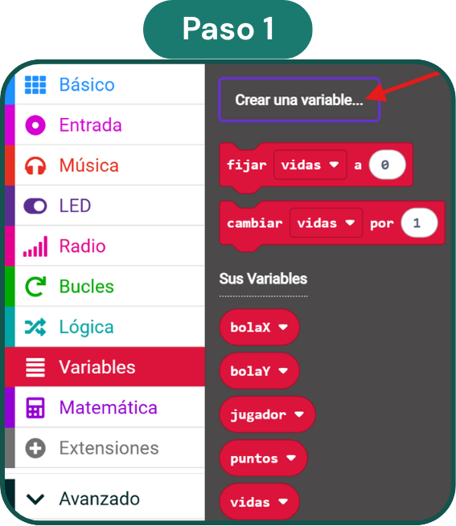
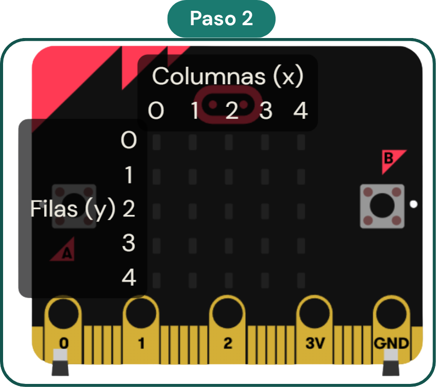
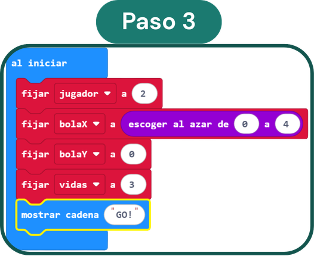
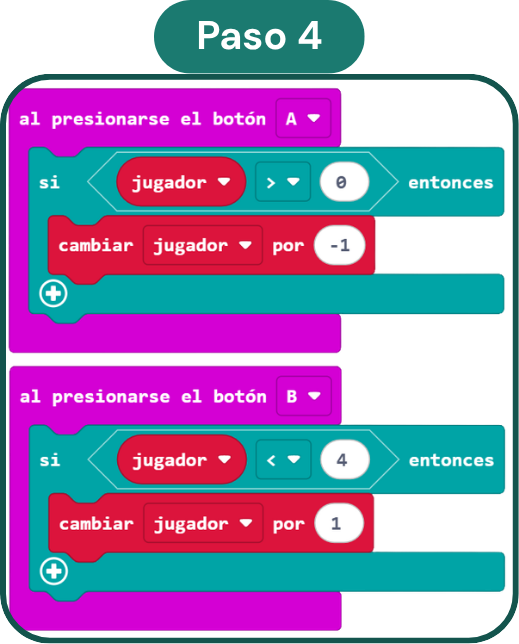
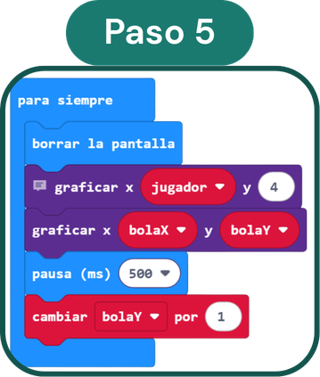
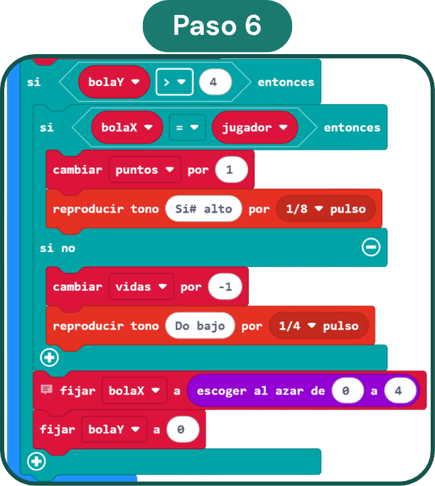
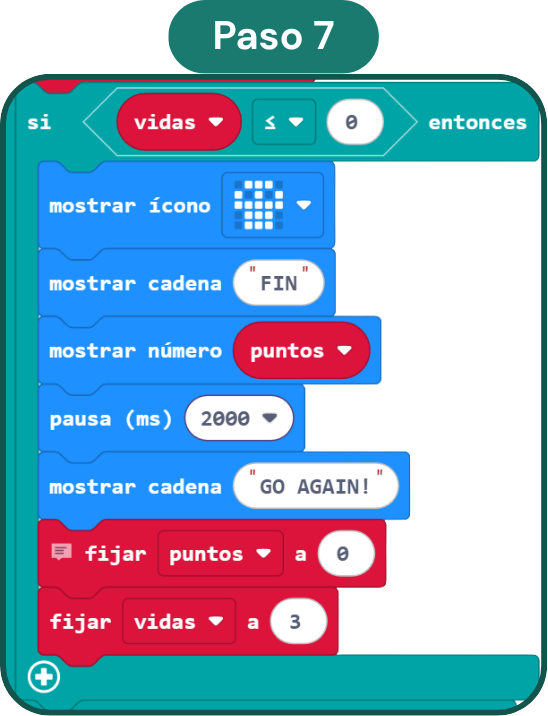

Se necesita...
- 1 placa micro:bit (v1 o v2).
- Pantalla de LED (incorporada).
- Sonidos / zumbador (opcional, v2).
- Portapilas (opcional, para jugar en cualquier sitio).
- Ordenador con conexión a internet y acceso a MakeCode para programarla.
¿Qué aporta al aula?
- Actividad rápida, motivadora y muy accesible para iniciarse en la programación por bloques.
- Trabaja la lógica, la coordinación y la toma de decisiones.
- Introduce variables y condicionales de forma visual e intuitiva.
- Funciona en el simulador: no hace falta placa física.
Variables que vamos a usar
Paso a paso

Crea las variables
Ve a Variables → Crear una variable... y crea las cinco variables del juego: bolaX, bolaY, jugador, puntos y vidas. No hace falta darles valor todavía, eso lo haremos en el siguiente paso.

Entiende el sistema de coordenadas
Usaremos el bloque "graficar" (categoría LED) para encender un LED concreto. Necesita dos valores: x (columna, de 0 a 4) e y (fila, de 0 a 4).
El jugador siempre estará en la fila y=4 (la de abajo). La bola empieza en y=0 (la de arriba) y va bajando.

Prepara el inicio del juego
Dentro de "Al iniciar", configura los valores de partida:
→ jugador = 2 (centro de la fila inferior)
→ bolaX = número al azar de 0 a 4
→ bolaY = 0 (fila superior)
→ vidas = 3
→ mostrar cadena "GO!" para avisar al jugador

Mueve al jugador con los botones
Añade dos bloques "al presionarse el botón" (Entrada):
→ Botón A: si jugador > 0 → cambiar jugador por -1 (izquierda)
→ Botón B: si jugador < 4 → cambiar jugador por +1 (derecha)

Anima la pantalla en el bucle principal
Dentro del bloque "para siempre", añade en orden:
1. borrar la pantalla
2. graficar x: jugador, y: 4 (dibuja al jugador)
3. graficar x: bolaX, y: bolaY (dibuja la bola)
4. pausa 500 ms (velocidad del juego)
5. cambiar bolaY por 1 (la bola cae una fila)

Detecta si la bola es atrapada o perdida
Después del bloque "cambiar bolaY por 1", añade una condición "si bolaY > 4". Dentro:
→ Si bolaX = jugador (bola atrapada):
cambiar puntos por 1 + reproducir tono agudo
→ Si no (bola perdida):
cambiar vidas por -1 + reproducir tono grave
→ Fuera del si/si no: fijar bolaX al azar 0–4 y fijar bolaY a 0 para lanzar la siguiente bola.

Programa el fin del juego
Justo después del bloque "fijar bolaY a 0" (dentro del "si bolaY > 4"), añade:
→ Si vidas ≤ 0:
mostrar ícono calavera
mostrar cadena "FIN"
mostrar número puntos
pausa 2000 ms
mostrar cadena "GO AGAIN!"
fijar puntos a 0 · fijar vidas a 3
Puedes parar y probar después de cada paso
Tips
- Para en cada paso y prueba en el simulador antes de continuar. Así es más fácil detectar errores.
- Se puede jugar directamente en el simulador de MakeCode sin necesidad de placa física.
- Con un portapilas acoplado a la micro:bit, puedes jugar en cualquier sitio del centro.
Idea: aumenta la dificultad
- Crea una variable llamada velocidad y dale valor 500 en "Al iniciar".
- Sustituye el valor fijo de "pausa 500 ms" por la variable velocidad.
- Antes del bloque "si vidas ≤ 0", añade "cambiar velocidad por -50".
- Así, ¡la bola cae más rápido con cada nueva bola que aparece!
¿Listo para jugar?
Abre el proyecto en MakeCode, pruébalo en el simulador y descárgalo a tu micro:bit.